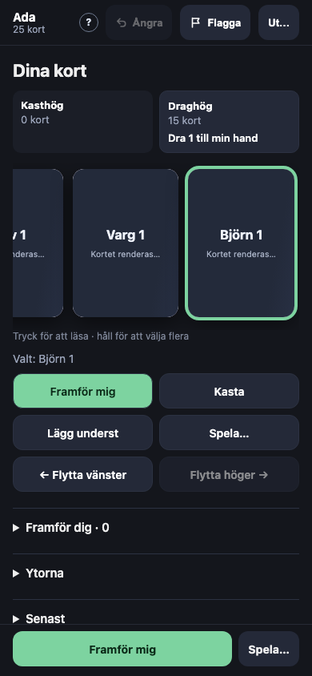
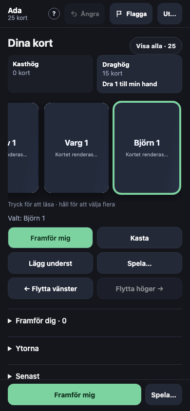
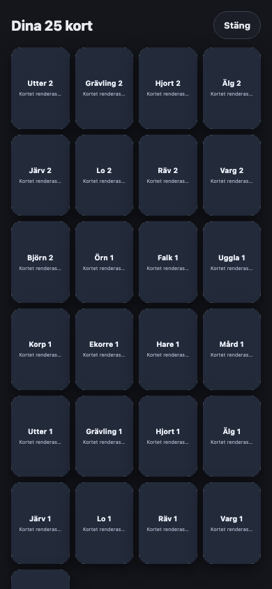
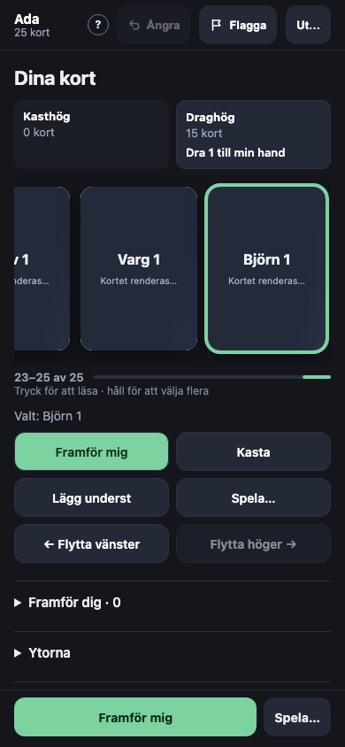

Handen på telefonen med 25 kort (#767)
Den byggda appen vid 390 × 844 med 25 kort på handen. I dag är remsan 3 615 px bred i en ruta på 358 px: tre kort syns åt gången, och inget säger var i handen man är.
I dag

A — «Visa alla · 25» bredvid rubriken (rekommenderad, gärna med B)
Samma överblick som /online har (K17): ett tryck ger alla kort i ett rutnät med fyra i bredd, och ett tryck på ett kort väljer det. Remsan står kvar som den är.


B — en lägesmarkör under remsan
«23–25 av 25» och en tunn list som visar var i handen man står. Inget nytt att trycka på, men letandet är kvar.
